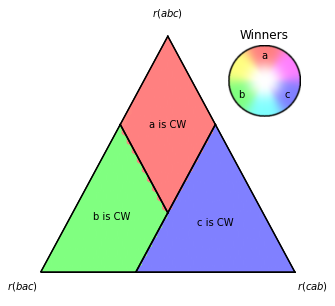

Divided Preferences: Approval (6.2.3)
[1]:
from fractions import Fraction
from matplotlib import pyplot as plt
from poisson_approval import *
[2]:
SCALE = 25
SAMPLES_PER_POINT = 1000
N_MAX_EPISODES = 1000
[3]:
divided_majority_av = SimplexToProfile(
ProfileHistogram,
right_type=('cab', (1, )),
top_type=('abc', (1, )),
left_type=('bac', (1, )),
d_type_fixed_share={('cba', (1, )): 0.2},
voting_rule=APPROVAL
)
[4]:
fig, tax = ternary_plot_winning_frequencies(
divided_majority_av,
scale=SCALE,
init='random_tau',
samples_per_point=SAMPLES_PER_POINT,
n_max_episodes=N_MAX_EPISODES,
title='',
legend_title='Winners',
file_save_data='sav/DM_AV.sav',
)
plt.savefig('img/fDM_AV.png', dpi=600, bbox_inches="tight")

[5]:
tax.f_point_values_(right=0.02, top=0.69, left=0.29)
[5]:
array([1.0, 0.0, 0.0], dtype=object)
An example where the CW may not be elected under AV:
[6]:
profile = ProfileHistogram({
('abc', (1, )): Fraction(55, 100),
('bac', (1, )): Fraction(25, 100),
('cba', (1, )): Fraction(20, 100)
})
[7]:
profile.analyzed_strategies_ordinal
[7]:
Equilibria:
<abc: a, bac: b, cba: bc> ==> a (FF)
<abc: ab, bac: b, cba: c> ==> b (D)
Non-equilibria:
<abc: a, bac: b, cba: c> ==> a (D)
<abc: a, bac: ab, cba: c> ==> a (D)
<abc: a, bac: ab, cba: bc> ==> a (FF)
<abc: ab, bac: b, cba: bc> ==> b (D)
<abc: ab, bac: ab, cba: c> ==> a, b (FF)
<abc: ab, bac: ab, cba: bc> ==> b (D)